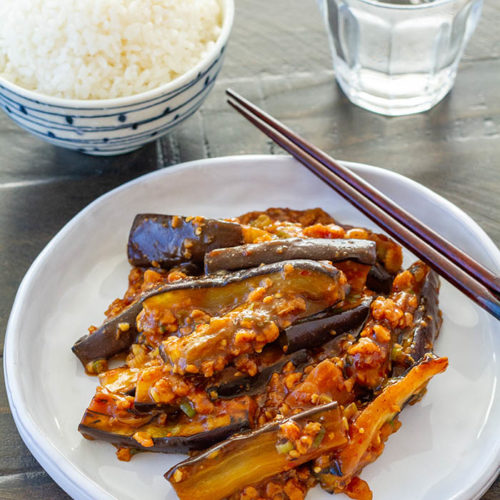

Mapo nasu 'Eggplant'

Delicious Mapo nasu recipe
Mapo Eggplant or mapo Nasu is a typical homemade japanese food, a twist on the chinese dish mapo tofu
but with a more japanese flavor and less spicy than the chinese original
Ingredients
- 2-3 Eggplants
- 1 teaspoon Doubanjiang
- 1 Tablespoon Tienmenjiang
- 1 teaspoon Miso paste
- 1 teaspoon minced fresh ginger
- 1 minced fresh garlic clover
- 2 green onions
Preparation
- Cut and fry the Eggplants until golden brown
- Mix all the pastes with a cup of water and start cooking on low
- Once all the ingredients are warm but not boiling add the Eggplants
- Stir until before of boiling point, the moment
- Add the chopped green onions at the end
Recipes